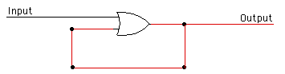

Circuits that Remember
You've seen that a circuit that does not have any feedback loops simply takes the values from its inputs and computes an output value based on those inputs. Changing the values on the input wires will change the output values -- after just a very short delay for the signal to pass through the circuit. Such circuits have no "memory." The output is computed based on the current inputs, and anything that happened to the circuit in the past has no effect.
Here we are interested in circuits that have some memory of what happened to them in the past. That is, the output of the circuit is not based solely on the current inputs. It can also depend on inputs that were given to the circuit in the past. Memory circuits include feedback loops. A feedback loop occurs when the output from a gate is connected back to an input of the same gate -- possibly through one or more other gates. Such a loop allows previous inputs to affect current outputs. This is exactly what we need for memory circuits.
You should see three sample circuits on the circuit board. Each of these is a simple circuit containing a feedback loop. You should turn on the power and experiment with these circuits.
The first circuit consists of a NOT gate, with its output connected back to its input. What happens to this circuit when you turn on the power? This is not what I would call a memory circuit! It shows that not every circuit that contains a feedback loop can properly be called a memory circuit. (In fact, building memory circuits is a pretty touchy affair.) However, even this simple example of a feedback loop turns out to be useful and interesting, as you'll see in some of the exercises at the end of the lab.
The second example on the circuit board is an OR gate whose output is fed back to one of its inputs:
